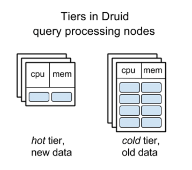

ClickHouse, Druid
и Pinot – три
открытых
хранилища данных, которые позволяют выполнять аналитические запросы на больших объемах
данных с интерактивными задержками.Этастатья - перевод подробного
сравнения,
выполненного Романом Левентовым
Источники информации
Подробности реализации ClickHouse стали мне известны от Алексея Зателепина, одного из ключевых
разработчиков проекта.
Доступная на английском документация достаточно скудна –наилучшим источником информации
служат последние четыре секции данной страницы документации.
Я сам участвую в развитии Druid, но у меня нет личной заинтересованности в этой
системе - по правде говоря, скорее всего в ближайшеевремя я перестану заниматься
еёразработкой. Поэтому читатели могут рассчитывать на отсутствие какой-либо
предвзятости.
Всё, что я буду далее писать про Pinot, основывается на странице Архитектура в вики Pinot, а также на других страницах вики в
разделе "Проектная документация". Последний раз они обновлялись
в июне 2017 года - больше, чем полгода назад.
Рецензентами оригинальной статьи стали Алексей Зателепин и Виталий Людвиченко (разработчики
ClickHouse), Жан
Мерлино (самый активный разработчик Druid),
Кишор
Гопалакришна (архитектор Pinot) и Жан-Француа Им (разработчик Pinot). Мы
присоединяемся к благодарности автора и полагаем, что это многократно повышает
авторитетность статьи.
Предупреждение: статья достаточно большая, поэтому вполне возможно
вы захотите ограничиться прочтением раздела "Заключение" в
конце.
Сходства между системами
Связанные данные и вычисления
На фундаментальном уровне, ClickHouse, Druid и Pinot похожи, поскольку они
хранят данные и выполняют обработку запросов на одних и тех же узлах, уходя от
"разъединенной"
архитектуры BigQuery. Недавно я уже описывал несколько наследственных проблем со
связанной архитектурой в случае Druid [1,
2].
Открытого эквивалента для BigQuery на данный момент не существует (за исключением,
разве что, Drill?)
Возможным подходамк построению подобных открытых систем посвящена другая статья в моем блоге.
Отличия от Big Data SQL-систем: индексы и статическое распределение данных
Рассматриваемые в этой статье системы выполняют запросы быстрее,
чем системы Big Data из семейства класса SQL-on-Hadoop: Hive, Impala, Presto и
Spark, даже когда последние получают доступ к данным, хранящимся в колоночном
формате -к примеру, Parquet или Kudu. Это происходит потому, что в ClickHouse,
Druid и Pinot:
Имеется свой собственный формат для хранения данных с индексами,
и они тесно интегрированы с движками обработки запросов. Системы класса
SQL-on-Hadoop обычно можно назвать агностикамиотносительно форматовданных и
поэтому они менее "навязчивы" в бэкендах Big Data.
Данные распределены относительно "статично" между
узлами, и при распределенном выполнении запроса это можно использовать.
Обратная сторона медали при этом в том, что ClickHouse, Druid и Pinot
не поддерживают запросы, которые требуют перемещения большого количества
данных между узлами - к примеру, join между двумя большими
таблицами.
Отсутствие точечных обновлений и удалений
Находясь на другой стороне спектра баз данных, ClickHouse, Druid и Pinot не
поддерживают точечные обновления и удаления, в противоположность
колоночным системам вроде Kudu, InfluxDB и Vertica (?). Это даёт ClickHouse, Druid
и Pinot возможность производить более эффективное колоночное сжатие и более
агрессивные индексы, что означает большую эффективность использования
ресурсов и быстрое выполнение запросов.
Разработчики ClickHouse в Yandex планируют начать поддерживать обновления и удаления в будущем, но я не уверен, будут ли
это "настоящие" точечные запросы или обновления/удаления
диапазонов данных.
Поглощение в стиле Big Data
Все три системы поддерживают потоковое поглощение данных из Kafka. Druid и Pinot
поддерживают потоковую передачу данных стриминг в Лямбда-стиле и пакетное поглощение одних и тех же данных.
ClickHouse поддерживает пакетные вставки напрямую, поэтому ему не требуется
отдельная система пакетного поглощения подобная той, что используется в Druid и
Pinot. Если вас интересуют подробности, то их вы сможете найти далее.
Все рассматриваемые в статье системы являются незрелыми по меркам открытых
enterprise-систем Big Data. Однако, скорее всего они незрелы не более,
чем среднестатистическая открытая система Big Data - но это совсем другая история.
В ClickHouse, Druid и Pinot недостает некоторых очевидных оптимизаций и
функциональности, и они кишат багами (насчёт ClickHouse и Pinot я не уверен на все
100%, но не вижу причин, по которым они в этом плане были бы лучше Druid).
Это плавно подводит нас к следующему важному разделу.
Про сравнение производительности и выбор системы
Я регулярно вижу в сети, как некоторые проводят сравнения систем больших данных: они
берут набор своих данных, каким-либо образом "скармливают" его
оцениваемой системе, а затем немедленно пытаются измерить производительность - сколько
памяти или дискового пространства было занято, и насколько быстро выполнялись запросы.
Причем понимание того, как устроены изнутри испытываемые ими системы, у них
отсутствует. Затем, используя лишь подобные специфичные данные о производительности -
иногда вместе со списками функциональности, котораяим нужна и которая есть в системе на
настоящий момент, - они в итоге делают свой выбор или, что ещё хуже, выбирают
написать свою собственную, "лучшую" систему с нуля.
Такой подход мне кажется неправильным, по крайней мере он неприменим в отношении
открытых OLAP-систем для Big Data. Задача создания системы Bid Data OLAP, которая
смогла бы работать эффективно в большинстве сценариев использования и содержала бы все
необходимые функции настолько велика, что я оцениваю ее реализацию как минимум в 100
человеко-лет.
На сегодня, ClickHouse, Druid и Pinot оптимизированы только для конкретных
сценариев использования, которые требуются их разработчиком - и содержат по большей
части лишь те функции, в которых нуждаются сами разработчики. Я могу гарантировать, что
ваш случай обязательно "упрётся" в те узкие места, с которыми
разработчики рассматриваемых OLAP-систем еще не сталкивались -или же в те места, что их
не интересуют
Не говоря уже о том, чтоупомянутый выше подход "забросить данные в систему,
о которой вы ничего не знаете, и затем измерить её эффективность"
весьма вероятно даст искаженный результат из-за серьезных "узких"
мест, которые на самом деле могли бы быть исправлены простым изменением конфигурации,
схемы данных или другим построением запроса.
CloudFlare: ClickHouse против Druid
Одним таким примером, хорошо иллюстрирующим описанную выше проблему, является пост
Марека Вавруша о выборе между ClickHouse и Druid в Cloudflare. Им потребовалось 4 сервера
ClickHouse (которые со временем превратились в 9), и по их оценкам, для разворачивания
аналогичной установки Druid им бы потребовались "сотни узлов".
Пусть Марек и признает, что сравнение является нечестным, поскольку Druid
недостаёт "сортировки по первичному ключу", он возможно даже не
осознает, что достичь примерно того же самого эффекта в Druid возможно просто установив правильный порядок измерений в "ingestion
spec" и произведя простую подготовку данных: обрезать значение
колонки __time в Druid до некоей грубой детализации (к примеру, один
час) и опционально добавить другую "длинно-типовую" колонку
"precise_time",если для некоторых запросов требуются более
точные временные рамки. Да, это хак, но, как мы только что выяснили, и в Druid можно
сортировать данные по какому-либо измерению перед __time, и это
достаточно просто реализовать
Впрочем, я не стану спорить с их итоговым решением выбрать ClickHouse, поскольку на
масштабе примерно в 10 узлов и для их нужд ClickHouse мне тоже кажется лучшим выбором,
чем Druid. Но сделанное ими заключение о том, что ClickHouse как минимум на порядок
эффективнее (по меркам стоимости инфраструктуры), чем Druid - это серьёзное
заблуждение. На самом деле, из рассматриваемых нами сегодня систем, Druid
предлагает наилучшую возможность для реально дешёвых установок (смотрите
раздел "Уровни узлов обработки запросов в Druid" ниже)
Когда вы выбираете систему OLAP Big Data, не сравнивайте то, насколько они сейчас
хорошо подходятдля вашего случая. Сейчас они все субоптимальны. Вместо этого, сравните,
насколько быстро ваша компания способна заставить двигаться эти системы в том
направлении, которое нужно именно вам.
В силу своей фундаментальной архитектурной схожести, ClickHouse, Druid и Pinot имеют
примерно один и тот же "предел" эффективности и оптимизации
производительности. Здесь нет "волшебной таблетки", которая
позволила бы какой-либо из этих систем быть быстрее, чем остальные. Не позволяйте
запутать себя тем фактом, что в своём текущем состоянии системы показывают себя
очень по-разному в различных бенчмарках.
Допустим, Druid не поддерживает "сортировку по первичному ключу"
настолько хорошо, насколько это умеет ClickHouse - а ClickHouse в свою очередь не
поддерживает "инвертированные индексы" столь же хорошо, как
Druid, что даёт данным системам преимущества с той или иной нагрузкой. Упущенные
оптимизации могут быть реализованы в выбранной системе при помощи не такихуж и
больших усилий, если у вас есть намерение и возможность решиться на подобный
шаг.
В вашей организации должны быть инженеры, способные прочитать, понять и
модифицировать исходный код выбранной системы, к тому же у них должно быть на это
время. Заметьте, что ClickHouse написан на C++, а Druid и Pinot — на Java.
Или же ваша организация должна подписать контракт с компанией, которая оказывает
поддержку выбранной системы. Этобудут Altinity
для ClickHouse, Imply и Hortonworks
для Druid. Для Pinot таких компаний в данный момент нет.
Другие сведения о разработке систем, которые вам стоит принять во внимание:
Авторы ClickHouse, работающие в Yandex, утверждают, что они тратят 50% своего
времени на создание функциональности, которая требуется им внутри компании, и
другие 50% уходят на функции, который набирают большинство "голосов
сообщества". Однако, чтобы вы получили от этого факта преимущество,
требуется, чтобы функции, которые нужны вам, были и наиболее востребованы
сообществом ClickHouse.
Разработчики Druid из Imply мотивированы работать над широко используемыми
функциями, поскольку это позволит им максимально увеличить объем охвата своего
бизнеса в будущем.
Процесс разработки Druid сильно напоминает модель Apache, когда ПО несколько лет разрабатывается
несколькими компаниями, у каждой из который достаточно своеобразные и различные
приоритеты, и среди них нет ведущей компании. ClickHouse и Pinot покаеще далеки от
подобного этапа, поскольку ими занимаются соответственно лишь Yandex и Linkedin.
Сторонний вклад в развитие Druid имеет минимальныйшанс быть отклоненным в силу
того, что он расходится с видением основного разработчика -ведь в Druid нет
"основной" компании-разработчика.
Druid поддерживает "API разработчика", который позволяет
привносить собственные типы колонок, механизмы агрегации, возможные варианты для
«глубокого хранения» и пр., причем все это вы можете
держать в кодовой базе, отдельной от самого ядра Druid. Данное API документировано
разработчиками Druid, и они следят за его совместимостью с предыдущими версиями.
Однако, оно недостаточно "взрослое", и ломается практически
с каждым новым релизом Druid. Насколько мне известно, в ClickHouse и Pinot схожие
API не поддерживаются.
Согласно Github, над Pinot работает наибольшее число людей - по всей
видимости, лишь за прошлый год в Pinot было вложено не менее 10 человеко-лет. Для ClickHouse эта цифра
составляет примерно 6 человеко-лет, а для Druid - 7. В теории, это должно означать,
что Pinot улучшается быстрее всех остальных систем, которые мы рассматриваем.
Архитектуры Druid и Pinot почти что идентичны друг другу, в то время как ClickHouse
стоит слегка в стороне. Поэтому сначала мысравним ClickHouse c "обобщенной"
архитектурой Druid/Pinot, а затем обсудим мелкие различия между Druid и Pinot.
Различия между ClickHouse и Druid/Pinot
Управление данными: Druid и Pinot
В Druid и Pinot, все данные в каждой "таблице" (как бы она
не называлась в терминологии этих систем) разбиваются на указанное количество
частей. По временой оси, данные обычно разделены сзаданыминтервалом. Затем эти
части данных «запечатываются» индивидуально в
самостоятельные автономные сущности, называемые «сегментами».
Каждый сегмент включает в себя метаданные таблицы, сжатые столбчатые данные и
индексы.
Сегменты хранятся в файловой системе хранилища «глубокого
хранения» (например, HDFS) и могут быть загружены на узлыобработки
запросов, но последние не отвечают за устойчивость сегментов, поэтому узлыобработки
запросов могут быть заменены относительно свободно. Сегменты не привязаны жестко
к конкретным узлам и могут быть загружены на те или другие узлы.
Специальный выделенный сервер (который называется "координатором"
в Druid и "контроллером" в Pinot, но я ниже обращаюсь к нему
как к "мастеру") отвечает за присвоение сегментов узлам, и
перемещению сегментов между узлами,если потребуется.
Это не противоречит тому, чтоя отмечал выше,все три системы имеют статическое
распределение данных между узлами, поскольку загрузки сегментов и их перемещения в
Druid - и насколько я понимаю в Pinot - являются дорогими операциями и потому не
выполняются для каждой отдельной очереди, а происходятобычно раз в несколько
минут/часов/дней.
Метаданные сегментов хранятся в ZooKeeper - напрямую в случае Druid, и при помощи
фреймворка Helix в Pinot. В
Druid метаданные также хранятся в базе SQL, об этом будет подробнеев разделе "Различия
между Druid и Pinot".
Управление данными: ClickHouse
В ClickHouse нет "сегментов", содержащих данные, попадающие
в конкретные временные диапазоны. В нём нет "глубокого хранения"
для данных, узлыв кластере ClickHouse также отвечают и за обработку запросов, и за
постоянство/устойчивость данных, хранящихся на них. Так что вам не потребуется
HDFS или облачное хранилище данных вроде Amazon S3
В ClickHouse имеются секционированные таблицы, состоящие из указанного набора
узлов. Здесь нет "центральной власти" или сервера
метаданных. Все узлы, между которыми разделената или иная таблица, содержат полные,
идентичные копии метаданных, включая адреса всех остальных узлов, на которых
хранятся секции этой таблицы.
Метаданные секционированной таблицы включают "весы;"
узловдля распределения свежезаписываемых данных - к примеру, 40% данных должны идти
на узел A, 30% на узел B и 30% на C. Обычно же распределение должно происходить
равномерно, "перекоос", как в этомпримере, требуется только
тогда, когда к секционированной таблице добавляется новый узел и нужно побыстрее
заполнить его какими-либо данными. Обновления этих "весов"
должны выполняться вручную администраторами кластера ClickHouse, или
же автоматизированной системой, построенной поверх ClickHouse.
Управление данными: сравнение
Подход к управлению данными в ClickHouse проще, чем в Druid и Pinot: не требуется
"глубокого хранилища", всего один тип узлов, не требуется
выделенного сервера для управления данными. Но подход ClickHouse приводит к
некоторым трудностям, когда любая таблица данных вырастает настолько большой, что
требуется ее разбиение между десятком или более узлов: коэффициент усиления запроса
становится настолько же велик, насколько и фактор секционирования - даже для
запросов, которые покрывают небольшой интервал данных:
Компромисс распределения данных в ClickHouse
В примере, показанном на изображении выше, данные таблицы распределены между тремя
узламив Druid/Pinot, но запрос по малому интервалу данных обычно затрагивает лишь
два из них (до той поры, пока интервал не пересечет пограничный интервал сегмента).
В ClickHouse, любые запросы будут вынуждены затронуть три узлв–если таблица
сегментирована между тремя узлами. В данном примере разница не выглядит настолько
существенно, однако представьте себе, что случится, если число узловдостигнет 100 –
в то время как фактор сегментирования по-прежнему может быть равен, например, 10 в
Druid/Pinot.
Чтобы смягчить эту проблему, самый большой кластер ClickHouse в Яндексе, состоящий
из сотен узлов, в действительности разбит на многие «под-кластеры»
с несколькими десятками узловв каждом. Кластер ClickHouse используется в работе с
аналитикой по веб-сайтам, и каждая точка данных имеет измерение «ID
вебсайта». Существует жесткая привязка каждого ID сайта к
конкретному под-кластеру, куда идут все данные для этого идентификатора сайта.
Поверх кластера ClickHouse есть слой бизнес-логики, который управляет
этимразделением данных при поглощении данных и выполнении запросов. К счастью, в их
сценариях использования совсем немного запросов затрагивают несколько
идентификаторов сайтов, и подобные запросы идут не от пользователей сервиса,
поэтому у них нет жесткой привязки к реальному времени согласно соглашению об
уровне услуг.
Другим недостатком подхода ClickHouse является то, что,когда кластер растет очень
быстро, данные не могут перебалансироваться автоматически без участия человека,
который вручную поменяет «веса» узловв разбиваемой
таблице.
Уровни узлов обработки запросов в Druid
Управление данными при помощи сегментов «проще себе представить» - эта концепция
хорошо ложится на наши когнитивные способности. Сами сегменты можно перемещать
между узлами относительно просто. Эта две причины позволили Druid реализовать "разделение
на уровни" узлов, занимающихся обработкой запросов: старые данные
автоматически перемещаются на сервера с относительно большими дисками, но меньшим
количеством памяти и CPU, что позволяет значительно снизить стоимость
большого рабочего кластера Druid за счет замедления запросов к более
старым данным
Эта функция позволяет Metamarkets экономить сотни тысяч долларов расходов на
инфраструктуру Druid каждый месяц - в противовес тому варианту, если бы
использовался "плоский" кластер

Уровни узловобработки запросов в Druid
Насколько мне известно, в ClickHouse и Pinot пока еще нет похожей функциональности
- предполагается, что все узлы в их кластерах одинаковы
В силу того, что архитектура Pinotвесьма схожа с архитектурой Druid, как мне
кажется, будет не слишком сложно добавить аналогичную функцию в Pinot. Тяжелее
будет в случае с ClickHouse, поскольку для реализации данной функции крайне полезно
использование концепта "сегментов", однако это всё равно
возможно.
Репликация данных: Druid и Pinot
Единицей репликации в Druid и Pinot является единичный сегмент. Сегменты
реплицируются на уровне «глубокого хранения» (например, в три реплики на HDFS, или
при помощи хранилища BLOB-объектов в Amazon S3), и на уровне обработки запросов:
обычно и вDruid ивPinot, каждый сегмент загружается на дваразличныхузла.
«Мастер»-сервер мониторит уровни репликации для каждого сегмента и загружает
сегмент на какой-либо сервер, если фактор репликации падает ниже заданного уровня
(например, если какой-либо из узловперестаёт отвечать).
Репликация данных: ClickHouse
Единицей репликации в ClickHouse является секция таблицы на сервере (например, все
данные из какой-либо таблицы, хранящиеся на сервере). Аналогично секционированию,
репликация в ClickHouse является скорее «статической и конкретной»,чем «в облачном
стиле»: несколько серверов знают, что они являются репликами друг друга (для
некоторойконкретной таблицы; в случае другой таблицы, конфигурация репликации может
отличаться). Репликация предоставляет и устойчивость, и доступность запросов. Когда
повреждается диск на одномузле, данные не теряются, поскольку они хранятся еще и на
другомузле. Когда какой-либо узел временно недоступен, запросы могут быть
перенаправлены на реплику.
В самом большом кластере ClickHouse в Яндексе есть два одинаковых набора узловв
различных дата-центрах, и они спарены. В каждой паре узлыявляются репликами друг
друга (используется фактор репликации, равный двум), и они расположены в различных
дата-центрах.
ClickHouse полагается на ZooKeeper для управления репликацией –поэтому, если вам не
нужна репликация, то вам не нужен и ZooKeeper. Это означает, что ZooKeeper не
потребуется и для ClickHouse, развернутого на одиночном узле.
Поглощение данных: Druid и Pinot
В Druid и Pinot узлыо бработки запросов специализируются на загрузке сегментов и
обслуживают запросы к данным в сегментах; они не занимаются накоплением новых
данных и производством новых сегментов.
Когда таблица может обновляться с задержкой в час или более, сегменты создаются при
помощи движков пакетной обработки –к примеру, Hadoop или Spark. И в Druid, и в
Pinot есть первоклассная поддержка Hadoop из коробки. Существует сторонний плагин для поддержки индексации Druid в Spark, но
в данный момент официально он не поддерживается. Насколько мне известно, в Pinot
такого уровня поддержки Spark пока нет, то есть вы должны быть готовы разобраться с
интерфейсами Pinot и кодом, азатем самостоятельно написать код на Java/Scala, пусть
это и не должно быть слишком сложно. (Впрочем, с момента публикации оригинальной
статьи поддержка Sparkв Pinot была внесена контрибьютором).
Когда таблица должна обновляться в реальном времени, здесь приходит на помощь идея
"реалтаймовых" узлов, которыеделают три вещи: принимает
новые данные из Kafka (Druid поддерживает и другие источники), обслуживает запросы
с недавними данными, создает сегменты в фоне и затем записываетих в "глубокое
хранилище".
Поглощение данных: ClickHouse
Тот факт, что ClickHouse не требуется готовить "сегменты",
содержащие все данные и попадающие в заданные временные интервалы, позволяет
строить более простую архитектуру поглощения данных. ClickHouse не требуется ни
пакетный движок обработки вроде Hadoop, ни "реалтаймовые"
узлы. Обычные узлы ClickHouse - те же самые, что занимаются хранением данных и
обслуживают запросы к ним -напрямую принимают пакетные записи данных.
Если таблица разбита на сегменты, то узел, которыйпринимает пакетную запись
(например, 10к строк) распределяет данные согласно "весам"
(смотрите раздел ниже).Строки записываются одним пакетом, который формирует
небольшое "множество". Множество немедленно конвертируется в
колоночный формат. На каждом узле ClickHouse работает фоновый процесс, который
объединяет наборы строк в еще большие наборы. Документация ClickHouse сильно
завязана на принцип, известный как "MergeTree", и
подчеркивает схожесть его работы с LSM-деревомя это слегка смущает, поскольку данные не
организованы в деревья - они лежат в плоском колончатом формате.
Поглощение данных: сравнение
Поглощение данных в Druid и Pinot является "тяжелым": оно
состоит из нескольких различных сервисов, и управление ими - это тяжелый труд.
Поглощение данных в ClickHouse гораздо проще (что компенсируется сложностью
управления "историческими" данными - т.е. данными не в
реальном времени), но и здесь есть один момент: вы должны иметь возможность
собирать данные в пакеты до самого ClickHouse. Автоматическое поглощение и пакетный
сбор данных из Kafka доступно "из коробки", но если
у вас используется другой источник данных в реальном времени (здесь подразумевается
всё, что угодно, в диапазоне между инфраструктурой запросов, альтернативной Kafka,
и стриминговых движков обработки, вплоть до различных HTTP-endpoint), то вам
придется создать промежуточный сервис по сбору пакетов, или же внестикод напрямую в
ClickHouse.
Выполнение запроса
В Druid и Pinot имеется отдельный слой узлов, называемых "брокерами",
которые принимают все запросы к системе. Они определяют, к каким "историческим"
(содержащим данные не в реальном времени) узламобработки запросов должны быть
отправлены подзапросы, основываясь на отображении сегментов в узлы, в которых
сегменты загружаются. Брокеры хранят информацию об отображении в памяти.
Брокер-узлыотправляют дальше подзапросы к узламобработки запросов, и когда
результаты этих подзапросов возвращаются, брокер объединяет их и возвращает
финальный комбинированный результат пользователю.
Я не берусь предполагать, зачем при проектировании Druid и Pinot было принято
решение о введенииеще одного типа узлов. Однако, теперь они кажутся их неотъемлемой
частью, поскольку,когда общее количество сегментов в кластере начинает превышать
десять миллионов, информация об отображениисегментов в узлыначинает занимать
гигабайты памяти. Это очень расточительно –выделять столько много памяти на каждом
узледля обработки запросов. Вот вам и еще один недостаток, который накладывается на
Druid и Pinot их «сегментированной» архитектурой управления данными.
В ClickHouse выделять отдельный набор узловпод "брокер запросов"
обычно не требуется. Существует специальный, эфемерный "распределенный" тип таблицы в
ClickHouse, который может быть установлен на любом узле, и запросы к этой таблице
будут делать все то же, за что отвечают брокер - узлы в Druid иPinot. Обычно
подобные эфемерные таблицы размещаются на каждом узле, который участвует в
секционированной таблице, так что на практике каждый узел может быть "входной
точкой" для запроса в кластер ClickHouse. Этот узелможет выпускать
необходимые подзапросы к другим секциями, обрабатывать свою часть запроса
самостоятельно и затем объединять её с частичными результатами от других секций.
Когда узел (или один из процессинговых узловв ClickHouse, или брокер - узел в Druid
и Pinot) выпускает подзапросы к другим, и один или несколько подзапросов по
какой-либо причине заканчиваются неудачей, ClickHouse и Pinot обрабатывают эту
ситуацию правильно: они объединяют результаты успешно выполненных подзапросов
вместе, и всё равно возвращают частичный результат пользователю. Druid этой функции сейчас очень недостает: если в нем
выполнение подзапроса заканчивается неудачей, то неудачей закончится и весь запрос
целиком.
ClickHouse vs. Druid или Pinot: Выводы
"Сегментированный" подход к управлению даннымив Druid и
Pinot против более простого управления данными в ClickHouse определяет многие
аспекты систем. Однако, важно заметить, что это различие оказываетнебольшое(или не
оказываетвовсе) влияниена потенциальную эффективность сжатия (впрочем, история про
компрессию для всех трех систем имеет печальный конец по нынешнему состоянию дел),
или на скорость обработки запросов.
ClickHouse похож на традиционные RDMBS, например, PostgreSQL. В частности,
ClickHouse можно развернутьна всего один сервер. Если планируемый размер невелик -
скажем, не больше порядка 100 ядер CPU для обработки запросов и 1 TB данных, я бы
сказал, что ClickHouse имеет значительные преимущества перед Druid и Pinot в силу
своей простоты и отсутствия необходимости в дополнительных типах узлов, таких как
"мастер", "узлы поглощения в реальном
времени", "брокеры". На этом поле,
ClickHouse соревнуется скорее с InfluxDB, чем с Druid или Pinot.
Druid and Pinot похож на системы Big Data вроде HBase. Здесь в виду имеются
не характеристики производительности, а зависимость от ZooKeper, зависимость от
персистентного реплицируемого хранилища (к примеру, HDFS), сосредоточение внимания
на устойчивости к отказам отдельных узлов, а также автономная работа и управление
данными, не требующими постоянного внимания человека.
Для широкого спектра приложений, ни ClickHouse, ни Druid или Pinot не являются
очевидными победителями. В первую очередь, вы должны принимать во внимание вашу
способность разобраться с исходным кодом системы, исправлять баги, добавлять
новыефункциии т.д. Это подробнее обсуждается в разделе "Про сравнение
производительности и выбор системы".
Во-вторых, вам стоит взглянуть на таблицу ниже. Каждая ячейка в этой таблице
описывает свойство приложения, которое позволит определить предпочтительную
систему. Строки отсортированы нев порядке важности. Важность различных свойств
может разниться от приложения к приложению, но в целом можно применить следующий
подход: если ваше приложение соответствует подавляющему большинству строк со
свойствами в одной из колонок, то относящаяся к ней система в вашем случае является
предпочтительным выбором.
ClickHouse
Druid или Pinot
В организации есть эксперты по C++
В организации есть эксперты по Java
Малый кластер
Большой кластер
Немного таблиц
Много таблиц
Один набор данных
Несколько несвязанных наборов данных
Таблицы и данныенаходятся в кластере перманентно
Таблицы и наборыданных периодически появляются в кластере и удаляются
из него
Размер таблиц (и интенсивность запросов к ним) остается стабильным во
времени
Таблицы значительно растут и сжимаются
Однородные запросы (их тип, размер, распределение по времени суток и
т.д.)
Разнородные запросы
В данных есть измерение, по которому оно может быть сегментировано, и
почти не выполняется запросов, которые затрагивают данные,
расположенные внескольких сегментах
Подобного измерения нет, и запросы часто затрагивают данные,
расположенные во всем кластере
Облако не используется, кластер должен быть развернут на специфическую
конфигурацию физических серверов
Кластер развернут в облаке
Нет существующих кластеров Hadoop или Spark
Кластеры Hadoop или Spark уже существуют и могутбыть использованы
Примечание: ни одно из свойств выше не означает, что вы должны использовать
соответствующую систему (системы), или избегать другую. К примеру, если
планируется, что ваш кластер будет большим, это не значит, чтовыобязательно должны
рассматривать только Druid или Pinot, исключив ClickHouse. Скорее всего, в данной
ситуации Druid или Pinot могут быть лучшим выбором, но другие полезные свойства
могут перевесить чашу весов в сторону ClickHouse, который для некоторых приложений
является оптимальным выбором даже для больших кластеров.
Различия между Druid и Pinot
Как уже не раз отмечалось в данной статье, Druid и Pinot имеют весьма похожие
архитектуры. Есть несколько достаточно заметных особенностей, которые есть в одной
системе и отсутствуют в другой, и областей, в которых каждая из систем развита гораздо
сильнее другой. Тем не менее, всё, о чем я собираюсь упомянуть ниже, можно
воспроизвести в другой системе, приложив разумное количество усилий.
Между Druid и Pinot существует лишь одно существенное различие,
которое слишком велико для того, чтобы от него избавились в обозримом будущем - это
реализация управления сегментами в мастер-ноде. Кстати, разработчики
обеих систем наверняка не хотели бы этого делать в любом случае, поскольку оба подхода
имеют свои "за" и "против" - среди них
нет такого, который был бы лучше.
Управление сегментами в Druid
Мастер-нодав Druid (и ни один из узловв Pinot) не отвечают за сохранность
метаданных в сегментах данных в кластере, и текущее отображение между сегментами и
узламиобработки данных, на которых загружены сегменты. Эта информация хранится в
ZooKeeper. Однако, Druid в дополнениехранит эту информацию еще и в SQL базе данных,
которая необходимадля развертывания кластера Druid. Не могу сказать, с какой целью
было принято такоерешение, но сейчас оно дает следующие преимущества:
В ZooKeeper хранится меньше данных. Только минимум информации об
отображении идентификатора сегмента на список узлов,занимающихся обработкой
запросов, куда загружен сегмент, сохраняется в ZooKeeper. Оставшиеся
метаданные, к примеру, размер сегмента, список измерений и метрики, и т.д.
-хранятся только в SQL базе данных.
Когда сегменты данных вытесняются из кластера, поскольку они становятся слишком
старыми (это общая функция всех баз данных временных рядов - она есть и в
ClickHouse, и в Druid, и в Pinot), они выгружаются из узловобработки запросов и
их метаданные удаляются из ZooKeeper, но не из "глубокого
хранилища" и не из базы данных SQL. Пока они не будут удалены
из этих мест вручную, остается возможность "оживить"
действительно старые данные быстро, если онпотребуются для
построенияотчетов или исследований.
Вряд ли это планировалось с самого начала, но теперь есть планы сделать зависимость
Druid от ZooKeeper опциональной. Сейчас ZooKeeper используется для
трех различных функций: управления сегментами, обнаружениясервисов и хранения
свойств (например, для управления поглощением данных в реальном времени).
Обнаружение сервисов может быть предоставлено Consul. Управление сегментами
может бытьреализовано при помощи HTTP-команд, и оно доступно нам благодаря
тому, что функциихранения в ZooKeeper "бекапится" в базе
SQL.
То что нам приходится иметь в зависимостях базу данных SQL, приводит кбольшей
нагрузке на эксплуатацию,особенно,если в компании еще не использовалась какая-либо
БД SQL. Druid поддерживает MySQL и PostgreSQL, есть и расширение для Microsoft SQL
Server. Кроме того, когда Druid рразворачиваетсяв облаке, можно использовать
стандартные сервисы для управления RDBMS -к примеру, Amazon RDS.
Управление сегментами в Pinot
В отличие от Druid, который реализует всю логику управления сегментами
самостоятельно и полагается только на Curator
для взаимодействияс ZooKeeper, Pinot делегирует большую часть логики управления
сегментами и кластерами на фреймворк
Helix.
С одной стороны, я могу понять, что это дает разработчикам Pinot возможность
сосредоточиться на других частях их системы. В Helix возможно меньше багов, чем в
логике внутри самого Druid, поскольку он тестируется в других условиях и поскольку
в него, предположительно, было вложено гораздо больше рабочего времени.
С другой стороны, Helix возможно ограничивает Pinot своими "рамками
фреймворка". Helix, и следовательно, Pinot, скорее всего будут
зависеть от ZooKeeper всегда.
Далее я собираюсь перечислить менееважные различия между Druid и Pinot -в том
смысле, что если у вас возникнет серьезное желание повторить одну из этих функцийв
вашей системе, то это будет вполне осуществимо.
«Проталкивание предикатов» в Pinot
Если во время поглощения данные секционируются в Kafka по каким-либо ключам
измерений, Pinot создаёт сегменты, которые содержат информацию об этом разбиениии
затем,когда выполняется запрос с предикатом на данном измерении, брокер-узел
фильтрует сегменты таким образом, чтобы как можно меньше сегментов и узлов
обработки запросов было затронуто.
Эта концепцияв оригинале называется "predicate pushdown" и важна
для поддержания высокой производительности в некоторых приложениях.
На данный момент Druid поддерживает разбиениепо ключам, если сегменты были созданы
в Hadoop, но еще не поддерживает сегменты, созданные во время поглощения в реальном
времени. Druid сейчас не реализует функцию «проталкивания предикатов» на брокеры.
"Сменный" Druid и своевольный Pinot
Поскольку Druid используют различныеорганизациии в его разработке принимают участие
несколько компаний, он обзавелся поддержкой нескольких взаимозаменяемых опций для
практически любой выделенной части или "сервиса":
HDFS, Cassandra, Amazon S3, Google Cloud Storage или Azure Blob Storage и т.д.
в качестве "глубокого хранилища";
Kafka, илиr RabbitMQ, Samza, или Flink, или Spark, Storm, и т.д. (через Tranquility) в качестве источника поглощения данных в
реальном времени;
Сам Druid, илиGraphite, или Ambari, или StatsD, или Kafka в качестве "слива"
для телеметрии кластера Druid (метрик).
В то же время Pinot почти целиком разрабатывался исключительно в стенах LinkedIn и
должен был удовлетворять текущим нуждам компании, поэтому выбор, который вам
предлагается, не так велик.Вкачестве "глубокого хранилища"
необходимо использовать HDFS или Amazon S3, а для поглощения данных в реальном
времени подойдет только Kafka. Но если кому-то это действительно понадобится, мне
кажется, не составит особой сложности добавить поддержку любого другого сервиса в
Pinot. К тому же, можно ожидать позитивных сдвигов в этом направлении, поскольку Uber и Slack начинают использовать Pinot.
Формат данных и движок выполнения запросов лучше оптимизированы в Pinot
В частности, следующие функции формата сегментов Pinotсейчас отсутствуют в Druid:
Сжатие проиндексированных столбцов с битовой гранулярностью, но байтовой
гранулярностью в Druid/
Инвертированный индекс опционален для каждого столбца. В Druid он
является обязательным, иногда этого не требуется, но все равнозанимает много
места. Различие в потреблении места между Druid и Pinot, на которое указывает Uber в своих тестах, вполне
возможно вызваноименно этим.
Минимальные и максимальные значения в числовых столбцах записываются
посегментно.
Поддержка сортировки данных из коробки. В Druid этого можно достичь
только вручную и слегка специфическим способом (как было описано в разделе
"CloudFlare: ClickHouse против Druid"). Сортировка
данных означает лучшее сжатие, и эта функция в Pinot - ещё одна причина
различия между Druid и Pinot в потреблении пространства (и производительности
запросов!), на которую указывает Uber.
Формат данных, используемый для многозначных столбцов, на данный момент
лучше оптимизирован в Pinot, чем в Druid.
Однако, все это можно реализовать и в Druid. И несмотря на то, что формат Pinot
оптимизирован существенно лучше, чем формат Druid, он все равно достаточно далек от
того, чтобы быть оптимальным. Один из примеров: Pinot (как и Druid) использует
только сжатие общего назначение (как Zstd) и еще не реализовали идеи сжатия из Gorilla.
Ксожалению Uber по большей части использовал запросы count (*) для
сравнения производительности Druid и Pinot относительно выполнения запроса [1, 2], который сейчас в Druid представляет собой тупое
линейное сканирование, хотя его и несложно заменить корректной O(1) реализацией. Это вам еще один пример
бессмысленных сравнений в стиле "черного ящика", о которых
мы говорили ранее.
По моему мнению, причины сильного различия в производительности запросов GROUP
BY, которое наблюдали в Uber, стоит искать в недостатке сортировки
данных в сегментах Druid, как уже было отмечено выше в этом разделе.
У Druid есть более умный алгоритм присваивания (балансировки) сегментов
Алгоритм Pinot заключается в присвоении сегмента к узлам обработки запроса, которые
имеют наименьшее число сегментов, загруженных в текущий момент. Алгоритм Druid
является гораздо более сложным; он учитывает таблицу каждого сегмента и время, и
применяет сложную формулу для вычисления финального коэффициента,
согласно которому будут ранжированы узлы обработки запросов для выбора наилучшего,
которому и будет присвоен новый сегмент. Этот алгоритм показал ускорение в скорости
выполнения запросов в продакшне Metamarketsна 30-40%. Хотя, даже несмотря на
подобный результат, мы им по-прежнему не слишком довольны - подробности можно
прочитать в отдельной статье.
Не знаю, как в LinkedIn управляются со всем при помощи настолько простого алгоритма
балансировки сегментов в Pinot, но, вполне возможно, их ожидают значительные
улучшения по части производительности, если они решатся потратить время на
совершенствование используемого ими алгоритма.
Pinot более устойчив к отказам при выполнении сложных запросов
Как уже упоминалось выше в разделе "Выполнение запроса",
когда брокер-узелсоздает подзапросы к другим узлам, некоторые подзапросы
заканчиваются ошибкой, но Pinot объединяет результаты всех удачно выполненных
подзапросов и по-прежнему возвращает частичный результат пользователю.
В Druid такой функции на данный момент.
Иерархия узлов обработки запросов в Druid
Смотрите аналогичный раздел выше. Druid позволяет вводитьуровни узловобработки
запросов для старых и новых данных, и для узловсо "старыми"
данными соотношение "ресурсы CPU, RAM / число загруженныхсегментов"
гораздо ниже, что позволяет выиграть на расходах на инфраструктуру в обмен на
низкую производительность запросов при доступе к старым данным.
Насколько мне известно, в Pinot на данный момент аналогичная функциональность
отсутствует.
Заключение
ClickHouse, Druid и Pinot имеют фундаментально схожую архитектуру, и занимают
свою собственную нишу между Big Data-фреймворками общего назначения вроде Impala,
Presto, Spark, и колоночными базами данных с корректной поддержкой первичных ключей,
точечных обновлений и удалений, как InfluxDB.
В силу схожести архитектур, ClickHouse, Druid и Pinot имеют примерно одинаковый "предел
оптимизации". Но в своём текущем состоянии, все три системы еще
незрелы и очень далеки от этого лимита. Существенных улучшений в
производительности данных систем (применительно к специфическим сценариям
использования) можно достичь несколькими человеко-месяцами работы опытных инженеров.
Я бы не рекомендовал вам сравнивать производительность данных систем между собой
-выберите для себя ту, чей исходный код вы способны понять и модифицировать, или ту, в
которую вы хотите инвестировать свои ресурсы.
Из этих трех систем, ClickHouse стоит немного в стороне от Druid и Pinot -в то время
как Druid и Pinotпрактически идентичны, и их можно считать двумя независимо
разрабатываемыми реализациями одной и той же системы.
ClickHouse больше напоминает "традиционные" базы данных вроде
PostgreSQL. ClickHouse можно установить на один узел. При малых масштабах (менее 1 TB
памяти, менее 100 ядер CPU), ClickHouse выглядит гораздо более интересным вариантом,
чем Druid или Pinot -если вам все еще хочется их сравнивать -в силу того, что
ClickHouse проще и имеет меньше движущихся частей и сервисов. Я бы даже сказал, что на
таком масштабе он скорее становится конкурентом для InfluxDB или Prometheus, а не
дляDruid или Pinot.
Druid и Pinot больше напоминают другие системы Big Data из экосистемы Hadoop. Они
сохраняют свои "самоуправляемые" свойства даже на очень больших
масштабах (более 500 узлов), в то время как ClickHouse потребует для этогодостаточно
много работы профессиональных SRE. Кроме того, Druid и Pinot занимают выигрышную
позицию в плане оптимизации инфраструктурной стоимости больших кластеров, и лучше
подходят для облачных окружений, чем ClickHouse.
Единственным долгосрочным различием между Druid и Pinot является то, что Pinot зависит
от фреймворка Helix и будет продолжать зависеть от ZooKeeper, в то время как Druid
может уйти от зависимости от ZooKeeper. С другой стороны, установка Druid продолжит
зависеть от наличия какой-либо SQL-базы данных.На данный момент, Pinot оптимизирован
лучше, чем Druid.
Если вы уже сталкивались с необходимостью сравнения этих систем и сделали свой выбор,
то приходите на одну из наших конференций и расскажите о своем кейсе: о том какие
именно были задачи и какие грабли (а наверняка они были) вы встретили. Хотя, конечно,
базы данных далеко не единственная тема.
Ближайший по окончанию срока подачи заявок (до 9 апреля) фестиваль РИТ++ включает направления: фронтенд, бэкенд, эксплуатацию
и управление.
Участникам обычно интереснее всего узнать оконкретных примерах, но и выступления и в
виде обзоров и исследованийтоже возможны–главное, чтобы тема была интересна лично вам.